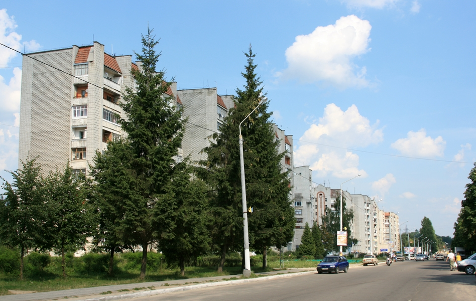

Місто Новояворівськ
Новоя́ворівськ — місто районного значення у Яворівському районі Львівської області. Розташоване на висоті 300 м над рівнем моря на межі Розточчя і Надсянської низовини у верхів'ях річки Шкло — за 14 км на схід від районного центру Яворів і за 30 км на захід від обласного центру Львів. Сьогодні — найбільше у Яворівському районі і 7-ме за ліком у Львівській області місто з населенням більше 30 тис. осіб. Входить до Львівської агломерації.
Зображення міста

Прапор

Назви
Засноване в 1965 році як селище «Янтарне»(від слова янтар, бурштин); перейменоване у 1969 у селище «Новояворівське»; 20 січня 1986 року отримано статус міста «Новояворівське»; 3 червня 2008 року перейменовано у місто «Новояворівськ». Назва «Новояворівськ» розшифровується як «Новий Яворів».Залізнична станція у Новояворівську ще з часів заснування до сьогодні носить назву «Янтарна».
Основні промислові підприємства:
- ТзОВ «Енергія-Новояворівськ»
- ТОВ «Йоха-Україна»
-
Фабрика «Євростиль» - ТОВ «Бейкер-Україна»